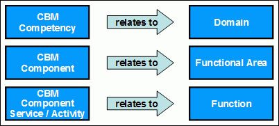
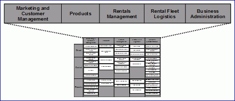
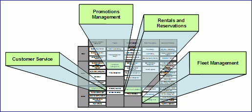
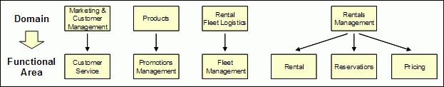

| Концепция: Functional Area Analysis |
 |
|
| Связанные элементы |
|---|
IntroductionFunctional Area Analysis uses a partitioning of the business, such as a CBM Component Model and Heat Map, as a starting point or input. Business domains are identified (for example, from CBM competencies) and further decomposed into sub-domains and ultimately into functional areas (for example, using CBM Components as input). Functional areas also suggest potential subsystem boundaries used for service component identification. Functional Area Analysis begins by creating summary descriptions that identify the major high level functional responsibilities of each domain. Next, each domain is decomposed into smaller, more discrete, functional areas. Each functional area is described in terms of the specific functions it is responsible for, as well as functions it depends on during collaborations with other functional areas.  CBM input mapped to Functional Area Description elements Input from a business analysis activity can save time, and should be used if available. If functional area analysis is being carried out using input from Component Business Modeling (CBM), a Domain will typically map to a CBM Competency, CBM business components are a good starting point for the identification of functional areas, and CBM Component Services and Activities are a good way to identify functions. CBM components often map one-to-one to functional areas, although in some cases a CBM component may be too coarse grained, encompassing too many types of functions. In that case it would need to be further decomposed into multiple functional areas. Functional Area Analysis begins by locating and summarizing descriptions of the domains and the activities within domains relevant to the business modeling initiative. Each of these domains is decomposed into smaller, more discrete, functional areas. Each functional area is concisely described in terms of the functions it is responsible for, as well as functions it depends on from other functional areas. Where CBM input is used, then the CBM Competencies identified in the CBM Component Map can be treated as domains and CBM Components can be considered as functional areas. A CBM Heat Map can be used to determine which Competencies and Components should be the focus of this analysis. ExampleWe begin with a CBM Component Model that is depicted in the Component Map below. This figure shows the CBM competencies for the Rent-a-car example in the top row of the Component Map table.  Rent-a-car CBM competencies Descriptions of each competency in the CBM Component Model are shown in Table 6. These descriptions will save time when we describe the domains that are the focus of Functional Area Analysis.  Rent-a-car CBM heat map Hot components in the CBM Heat Map indicate competencies that will be the focus of Functional Area Analysis. The figure above shows the four hot components -- the key components for the current SOA initiative in our running example. The competencies associated with these hot components become the focus domain areas for Functional Area Analysis:
Descriptions of each CBM component are shown in Table 6. Component descriptions provide insight into the functional responsibilities of domain focus areas and facilitate decomposition of domains into functional areas. Each domain is analyzed to identify the major functions it is responsible for. Analysis results can be captured in a visual model that groups functional areas by domain as shown below.  Rent-a-car Functional area analysis decomposition For Rent-a-car, we break the domains into functional areas by identifying major functional responsibilities for each domain in focus: Marketing and Customer management, Products, Rental Fleet Logistics, and Rentals Management. CBM components of these domains provide the starting point for this analysis:
These will be the core functional areas for the next steps in this example. The decision to designate three functional areas instead of one is a result of anticipating that these functional areas will be used in other SOMA steps, such as categories in the service hierarchy and subsystem boundaries to group functionally related components. At this early stage of the SOMA process, Rentals and Reservations looks like such a large functional area (i.e. encompassing many functions) that it could have become unwieldy to use in later steps. As is the case with other modeling techniques, we may find out later in the process, when more is known, that representing these three as a single subsystem will work fine (this in fact will be the case as we will see later in the paper). There is actually an overlap across several domains regarding pricing, but we have chosen to emphasize just the pricing aspect of Rentals Management since that this is the aspect of pricing that is most directly related to the example. The Products domain establishes baseline pricing guidelines that account for standard cost and profit policies. Marketing and Customer Management information combined with information from Rental Fleet Logistics information and other marketplace related criteria supports special promotional pricing by the Products domain. Marketing and Customer Management influences the criteria by which pricing schedules are applied to various customer types. Nevertheless, whatever led to the establishment of pricing schedules, in this specific running example, it is Rentals Management where the prices are actually used during the reservation and rental. In a different scenario, other aspects of pricing could be the focus area. This is the type of insight that CBM and SOMA can bring to the customer, potentially leading to future initiatives and greater business value. Further analysis will consider the interdependencies that begin to emerge as analysis delves deeper into these functions. For example, as part of Reservations, it would be advantageous to adjust pricing due to oversupply of vehicles of a particular class at a particular location that Fleet Management is aware of. Each functional area is described with a concise textual explanation as shown in the Rent-a-Car Functional Area Description Table example. Input from a business analysis technique like CBM can save time: CBM Component descriptions that helped to identify functional areas also provide details that can be used to describe each functional area and its associated functions. Functional Area Interactions and DependenciesAs each functional area is being analyzed and described in terms of its functions, it is also analyzed in the larger context of its relationships to other functional areas (i.e. the interactions and collaborations among functional areas) are identified. This information will be used later as an input to subsystem analysis, which considers, among other things, the interactions among subsystems (which Functional Areas are used to identify) and Service Components within the subsystems. The partitioning of the business domain results in a set of functional areas. These functional areas will contain aggregates of cohesive functionality called subsystems. Each subsystem is a conceptual mechanism by which the boundaries of the potentially cohesive set of service components are defined. The identification of subsystems as a result of functional area analysis allows the seamless transition from business identification of functional areas to the determination of which subsystems are actually involved in the implementation of a given functional area. The subsystems become a blueprint for reuse. It provides us with an abstract behavior of not only the internal functioning of the subsystems but also contracts by which subsystems collaborate and depend upon one another. Subsystems bridge the gap between business (as defined by functional areas) and IT (as realized by service components). A final step is to identify a candidate subsystem for each functional area. In many cases there will be a one-to-one relationship between functional areas and subsystems. If it appears that multiple subsystems could be required, this is an indication that the functional area may need to be reassessed, split into one or more additional functional areas, each taking on a subset of the original functional area's functions. Functional AreasFunctional areas form the basis for defining the boundaries of IT subsystems, and provide a means to classify candidate services. Functional areas are used as a starting point for subsystems and Service Component identification. Functional areas are the lowest level of granularity to which a domain is decomposed. In this work product, each functional area is concisely described in terms of the functions it is responsible for, as well as functions it depends on from other functional areas. Functional areas provide sets of cohesive business functions for the domain (i.e. are subsets of the overall domain functionality). The identification of clearly defined functional areas is important for the success of business modeling initiatives because functional areas are a key to establishing cohesive business aligned groups of services and the subsystems that will be used to realize those services. Candidate subsystems identified in this work product are further analyzed leading to the identification of the Service Components that will be used to realize (implement) the services associated with the subsystem. A service component is a realization of a subsystem, a logical grouping of functionally-cohesive business-aligned services, which is important enough to the enterprise to be managed and governed as an enterprise asset. These business-aligned services can be exposed at a variety of boundaries, including the edge of the enterprise or a business unit. Any business is composed of business domains, a logical grouping of business capabilities (functionalities) that provide related business functions and require similar skills and expertise. To explain the concept of business domain, consider the following simplified example:
Domains can be broken down (decomposed) into Functional Areas. Functional areas provide a set of cohesive business functions for the domain. For example, a functional area in the Products Domain could be Product Development, whose main function is to develop and enhance the products. |
© Copyright IBM Corp. 1987, 2006. Все права защищены.. |